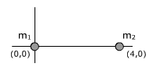
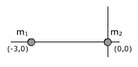
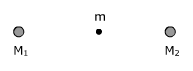
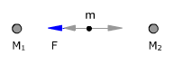
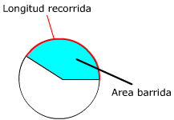
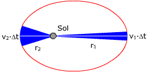

General
1Calcula la fuerza de atracción (Gravitatoria) entre dos personas de 80 kg separados 1 m. Determina la la relación entre esta fuerza atractiva y el peso de cada persona
Solución
$$\begin{aligned}&F=G\,\frac{m_1\,m_2}{d^2}=6{,}67\cdot10^{-11}\ \mathrm{\frac{N\,m^2}{kg^2}}\,\frac{80\ \mathrm{kg}\cdot80\ \mathrm{kg}}{(1\ \mathrm{m})^2}=4{,}27\cdot10^{-7}\ \mathrm{N}\\[6pt] &\frac{F}{P}=\frac{4{,}27\cdot10^{-7}\ \mathrm{N}}{80\ \mathrm{kg}\cdot9{,}8\ \mathrm{m/s^2}}=5{,}44\cdot10^{-10}\end{aligned}$$
La fuerza atractiva entre las dos personas es 5.44·10-10 veces la fuerza atractiva entre una de las personas y el planeta Tierra (Y eso que el centro de la Tierra, donde se puede suponer que está concentrada toda su masa, está mucho más lejos que 1 m)
2Si la masa de la Tierra se redujese a la mitad, para que la fuerza gravitatoria entre Tierra y Luna se mantuviese constante, la distancia entre ambas debería hacerse:
a) $\displaystyle \sqrt{2}$ veces menor b) $\displaystyle \sqrt{2}$ veces mayor c) 2 veces mayor d) 2 veces menor
Solución
Calculamos la fuerza gravitatoria entre Tierra y Luna cuando la Tierra, con masa M, está a distancia r1 y cuando la Tierra, con masa M/2, está a una distancia r2:
$$\begin{aligned}&\left.\begin{array}{l}F=G\,\frac{M\,m}{r_1^2}\\[6pt] F=G\,\frac{(M/2)\,m}{r_2^2}\end{array}\right\}\;\rightarrow\;G\,\frac{M\,m}{r_1^2}=G\,\frac{(M/2)\,m}{r_2^2}\\[6pt] &r_2^2=\frac{r_1^2}{2}\;\rightarrow\;r_2=\frac{r_1}{\sqrt{2}}\end{aligned}$$
Para que la fuerza sea la misma distancia r2 deberá ser $\displaystyle \sqrt{2}$ veces menor que la distancia r1
3Determina la fuerza gravitatoria (Vector) entre dos masas puntuales cuyas magnitudes y posiciones, en el S.I, se indican a continuación:
a) m1: 4·106, (0, 0) | m2: 5·106, (4, 0) |
b) m1: 2·106, (-3, 0) | m2: 4·105 (0, 0) |
c) m1: 105, (2, 3) | m2: 106, (1, -4) |
Solución
a)
F21: Fuerza que la masa m1 hace sobre la masa m2
|
|
 | $$\vec{r}=4\,\vec{i}+0\,\vec{j},\quad r=4,\quad\vec{u}=\vec{i}+0\,\vec{j}$$ |
| $$\begin{aligned}&\vec{F}_{21}=6{,}67\cdot10^{-11}\ \mathrm{\frac{N\,m^2}{kg^2}}\,\frac{4\cdot10^{6}\ \mathrm{kg}\cdot5\cdot10^{6}\ \mathrm{kg}}{(4\ \mathrm{m})^2}\left(-(\vec{i}+0\,\vec{j})\right)\\[6pt] &\vec{F}_{21}=83{,}4\ \mathrm{N}\,(-\vec{i}+0\,\vec{j})\end{aligned}$$ |
||
| La masa m2 es atraída por la masa m1 con una fuerza de 83,4 N |
||
a)
F12: Fuerza que la masa m2 hace sobre la masa m1
|
|
$$\vec{r}=-4\,\vec{i}+0\,\vec{j},\quad r=4,\quad\vec{u}=-\vec{i}+0\,\vec{j}$$ |
|
| $$\begin{aligned}&\vec{F}_{12}=6{,}67\cdot10^{-11}\ \mathrm{\frac{N\,m^2}{kg^2}}\,\frac{4\cdot10^{6}\ \mathrm{kg}\cdot5\cdot10^{6}\ \mathrm{kg}}{(4\ \mathrm{m})^2}\left(-(-\vec{i}+0\,\vec{j})\right)\\[6pt] &\vec{F}_{12}=83{,}4\ \mathrm{N}\,(\vec{i}+0\,\vec{j})\end{aligned}$$ |
||
| La masa m1 es atraída por la masa m2 con una fuerza de 83,4 N |
||
b)
F21: Fuerza que la masa m1 hace sobre la masa m2
|
|
 | $$\vec{r}=3\,\vec{i}+0\,\vec{j},\quad r=3,\quad\vec{u}=\vec{i}+0\,\vec{j}$$ |
| $$\begin{aligned}&\vec{F}_{21}=6{,}67\cdot10^{-11}\ \mathrm{\frac{N\,m^2}{kg^2}}\,\frac{2\cdot10^{6}\ \mathrm{kg}\cdot4\cdot10^{5}\ \mathrm{kg}}{(3\ \mathrm{m})^2}\left(-(\vec{i}+0\,\vec{j})\right)\\[6pt] &\vec{F}_{21}=5{,}93\ \mathrm{N}\,(-\vec{i}+0\,\vec{j})\end{aligned}$$ |
||
| La masa m2 es atraída por la masa m1 con una fuerza de 5,93 N |
||
b)
F12: Fuerza que la masa m2 hace sobre la masa m1
|
|
$$\vec{r}=-3\,\vec{i}+0\,\vec{j},\quad r=3,\quad\vec{u}=-\vec{i}+0\,\vec{j}$$ |
|
| $$\begin{aligned}&\vec{F}_{12}=6{,}67\cdot10^{-11}\ \mathrm{\frac{N\,m^2}{kg^2}}\,\frac{2\cdot10^{6}\ \mathrm{kg}\cdot4\cdot10^{5}\ \mathrm{kg}}{(3\ \mathrm{m})^2}\left(-(-\vec{i}+0\,\vec{j})\right)\\[6pt] &\vec{F}_{12}=5{,}93\ \mathrm{N}\,(\vec{i}+0\,\vec{j})\end{aligned}$$ |
||
| La masa m1 es atraída por la masa m2 con una fuerza de 5,93 N |
||
c)
F21: Fuerza que la masa m1 hace sobre la masa m2
|
|
| $$\vec{r}=-\vec{i}-7\,\vec{j},\quad r=\sqrt{50},\quad\vec{u}=\frac{-\vec{i}-7\,\vec{j}}{\sqrt{50}}=-0{,}14\,\vec{i}-0{,}99\,\vec{j}$$ |
| $$\begin{aligned}&\vec{F}_{21}=6{,}67\cdot10^{-11}\ \mathrm{\frac{N\,m^2}{kg^2}}\,\frac{10^5\ \mathrm{kg}\cdot10^6\ \mathrm{kg}}{(\sqrt{50}\ \mathrm{m})^2}\left(-(-0{,}14\,\vec{i}-0{,}99\,\vec{j})\right)\\[6pt] &\vec{F}_{21}=0{,}133\ \mathrm{N}\,(0{,}14\,\vec{i}+0{,}99\,\vec{j})\end{aligned}$$ |
||
| La masa m2 es atraída por la masa m1 con una fuerza de 0,133 N |
||

c)
F12: Fuerza que la masa m2 hace sobre la masa m1
|
|
| $$\vec{r}=\vec{i}+7\,\vec{j},\quad r=\sqrt{50},\quad\vec{u}=\frac{\vec{i}+7\,\vec{j}}{\sqrt{50}}=0{,}14\,\vec{i}+0{,}99\,\vec{j}$$ |
| $$\begin{aligned}&\vec{F}_{12}=6{,}67\cdot10^{-11}\ \mathrm{\frac{N\,m^2}{kg^2}}\,\frac{10^5\ \mathrm{kg}\cdot10^6\ \mathrm{kg}}{(\sqrt{50}\ \mathrm{m})^2}\left(-(0{,}14\,\vec{i}+0{,}99\,\vec{j})\right)\\[6pt] &\vec{F}_{12}=0{,}133\ \mathrm{N}\,(-0{,}14\,\vec{i}-0{,}99\,\vec{j})\end{aligned}$$ |
||
| La masa m1 es atraída por la masa m2 con una fuerza de 0,133 N |
||


4Tierra y Luna están separadas 3.84·105 km y sus masas son, respectivamente, 5.98·1024 kg y 7.34·1022 kg. Determina la fuerza que experimentaría un cuerpo de 1000 kg colocado en el punto medio entre los dos planetas
Solución
La fuerza que experimentará el cuerpo será la suma vectorial de las fuerzas que ejercen Tierra y Luna sobre él (Principio de superposición)
|
 |
|
|
|
|
|
 |
$$\begin{aligned}&\vec{F}=\vec{F}_1+\vec{F}_2\\[6pt] &\vec{F}=\frac{4\,G\,M_1\,m}{d^2}\,(-\vec{i})+\frac{4\,G\,M_2\,m}{d^2}\,(\vec{i})\\[6pt] &\vec{F}=\frac{4\,G\,m}{d^2}\left((-M_1\,\vec{i})+(M_2\,\vec{i})\right)=\frac{4\,G\,m}{d^2}\,(M_2-M_1)\,(\vec{i})\\[6pt] &\vec{F}=\frac{4\cdot6{,}67\cdot10^{-11}\ \mathrm{N\,m^2/kg^2}\;10^3\ \mathrm{kg}}{(3{,}84\cdot10^{8}\ \mathrm{m})^2}\,(7{,}34\cdot10^{22}-5{,}98\cdot10^{24})\ \mathrm{kg}\,(\vec{i})\\[6pt] &\vec{F}=-10{,}7\ \mathrm{N}\,(\vec{i})=10{,}7\ \mathrm{N}\,(-\vec{i})\end{aligned}$$ El cuerpo sufrirá una fuerza de 10,7 que tira de él hacia la Tierra |
5Suponiendo que la Tierra describe
una órbita circular alrededor del Sol calcula su velocidad areolar,
velocidad lineal y momento angular (Módulo).
Datos de la Tierra: m = 5.98·1024 kg, r (Órbita)
= 1.49·108 km, T = 1 año
Solución
 |
La velocidad aerolar es el área que barre, por unidad de tiempo, el vector de posición del planeta. En un año se barrerá toda el área que encierra la órbita: $$v_A=\frac{\pi r^2}{T}=\frac{\pi\,(1{,}49\cdot10^{11}\ \mathrm{m})^2}{365\cdot24\cdot3600\ \mathrm{s}}=2{,}21\cdot10^{15}\ \mathrm{\frac{m^2}{s}}$$ La velocidad lineal es la longitud de órbita que se recorre por unidad de tiempo. En un año se recorrerá toda la órbita: $$v=\frac{2\pi r}{T}=\frac{2\pi\,1{,}49\cdot10^{11}\ \mathrm{m}}{365\cdot24\cdot3600\ \mathrm{s}}=2{,}97\cdot10^{4}\ \mathrm{\frac{m}{s}}$$ |
 |
Momento angular: $$\begin{aligned}&\vec{L}=\vec{r}\times m\,\vec{v}\;\rightarrow\;L=r\,m\,v\operatorname{sen}90\\[6pt] &L=1{,}49\cdot10^{11}\ \mathrm{m}\;5{,}98\cdot10^{24}\ \mathrm{kg}\;\frac{2\pi\,1{,}49\cdot10^{11}\ \mathrm{m}}{365\cdot24\cdot3600\ \mathrm{s}}\\[6pt] &L=2\cdot5{,}98\cdot10^{24}\ \mathrm{kg}\;\frac{\pi\,(1{,}49\cdot10^{11}\ \mathrm{m})^2}{365\cdot24\cdot3600\ \mathrm{s}}=2{,}65\cdot10^{40}\ \mathrm{kg\,\frac{m^2}{s}}\end{aligned}$$ |
Curiosidad
El momento angular del planeta es el producto de la velocidad
areolar por el doble de la masa
Newton se dió cuenta de esto y descubrió así
la ley de la gravitación
6La Tierra en su órbita elíptica alrededor del Sol presenta dos puntos, el afelio y el perihelio, en los que su velocidad es perpendicular a su vector de posición respecto al Sol. Si en el afelio la velocidad de la Tierra es de 30 km/s y la distancia entre los centros de Tierra y Sol es 1.52·108 km, calcular la velocidad de la Tierra en el perihelio sabiendo que en este punto la distancia entre los centros de la Tierra y del Sol es de 1.47·108 km
Solución
La Tierra se mueve con velocidad areolar constante: en tiempos
iguales, su vector de posición desde el Sol barre áreas
iguales.
La figura muestra los triángulos que barre el vector de posición
de la Tierra, en un intervalo de tiempo Δt, cuando está en
el afelio (1) y cuando está en el perihelio (2). Si el tiempo es
lo bastante pequeño, la longitud de órbita recorrida es
recta y el área barrida es un triángulo
|  |
$$\begin{aligned}&\left.\begin{array}{l}S_1=\frac{1}{2}\,v_1\,\Delta t\,r_1\\[6pt] S_2=\frac{1}{2}\,v_2\,\Delta t\,r_2\end{array}\right\}\;\rightarrow\;\frac{1}{2}\,v_1\,\Delta t\,r_1=\frac{1}{2}\,v_2\,\Delta t\,r_2\\[6pt] &v_2=\frac{v_1\,r_1}{r_2}=\frac{30\ \mathrm{km/s}\;1{,}52\cdot10^{8}\ \mathrm{km}}{1{,}47\cdot10^{8}\ \mathrm{km}}=31\ \mathrm{km/s}\end{aligned}$$ |
La Tierra se mueve con momento angular constante, es decir el producto r·mv·sen φ es constante (r: vector de posición de la Tierra vista desde el Sol, φ: ángulo que forman r, v)
|
|
$$\begin{aligned}&\left.\begin{array}{l}L=r_1\,m\,v_1\operatorname{sen}90\\[4pt] L=r_2\,m\,v_2\operatorname{sen}90\end{array}\right\}\;\rightarrow\;r_1\,m\,v_1=r_2\,m\,v_2\\[6pt] &v_2=\frac{v_1\,r_1}{r_2}=\frac{30\ \mathrm{km/s}\;1{,}52\cdot10^{8}\ \mathrm{km}}{1{,}47\cdot10^{8}\ \mathrm{km}}=31\ \mathrm{km/s}\end{aligned}$$ |

0Para un planeta que recorre una órbita circular prueba que: L/vA = 2m
Solución
|
$$\begin{aligned}&\vec{L}=\vec{r}\times m\,\vec{v}\\[6pt] &L=r\,m\,v\operatorname{sen}90=r\,m\,v\end{aligned}$$ La velocidad orbital se obtiene dividiendo la longitud de la órbita por el tiempo que tarda en recorrerla: $$L=r\,m\,\frac{2\pi r}{T}=\frac{2\pi\,m\,r^2}{T}$$ |

La velocidad areolar es el área que barre, por unidad de tiempo, el vector de posición del planeta. En un año se barrerá toda el área que encierra la órbita:
$$v_A=\frac{\pi r^2}{T}$$
Entonces el cociente del momento angular entre la velocidad areolar será:
$$\frac{L}{v_A}=\frac{2\pi\,m\,r^2/T}{\pi r^2/T}=2\,m$$